With climate change at a rate never seen before, humanity needs to change and make a difference — even in creating art. For the Iveco Gala Dinner in Turin, our team, collaborating with Filmmaster Events, decided to take action and create an eco-friendly scenography: a “living set design” using real trees that were replanted after the event.
The result was a spectacular treetop laser mapping spectacle, with the finishing touch of live music played by two violinists and a pianist — a unique opportunity to demonstrate the possibility of combining creativity and sustainability. Responsibility with the future: that’s always an amazing goal for a great event.
Con il cambiamento climatico a un ritmo mai visto prima, l’umanità ha bisogno di cambiare e fare la differenza — anche nel creare arte. Per la Gala Dinner Iveco a Torino, il nostro team, in collaborazione con Filmmaster Events, ha deciso di agire e creare una scenografia eco-friendly: un “living set design” con alberi veri che sono stati ripiantati dopo l’evento.
Il risultato è stato uno spettacolare show di laser mapping sulle chiome degli alberi, con il tocco finale di musica dal vivo suonata da due violiniste e un pianista — un’opportunità unica per dimostrare la possibilità di coniugare creatività e sostenibilità. Responsabilità verso il futuro: è sempre un obiettivo straordinario per un grande evento.
Avec le changement climatique à un rythme jamais vu auparavant, l’humanité doit changer et faire la différence — même dans la création artistique. Pour le Gala Dinner Iveco à Turin, notre équipe, en collaboration avec Filmmaster Events, a décidé d’agir et de créer une scénographie éco-responsable : un « living set design » avec de vrais arbres replantés après l’événement.
Le résultat a été un spectaculaire show de laser mapping sur la cime des arbres, avec la touche finale d’une musique live jouée par deux violonistes et un pianiste — une occasion unique de démontrer la possibilité de combiner créativité et durabilité. La responsabilité envers l’avenir : c’est toujours un objectif extraordinaire pour un grand événement.
Il Concept — Connecting the Dots
«Connecting the Dots» nasce come metafora del momento storico di Iveco Group: l’azienda, scorporata da CNH Industrial nel gennaio 2022 e quotata in Borsa con identità autonoma, si raccontava per la prima volta come un ecosistema di marchi (Iveco, Iveco Bus, Astra, Heuliez, Magirus, FPT Industrial, Iveco Capital) chiamati a collegare i propri punti — heritage industriale, ricerca, sostenibilità, persone — in una traiettoria comune verso il futuro.
Cristian Taraborrelli ha tradotto questa narrazione in un gesto scenografico letterale: i «dots» del concept diventano alberi vivi, fasci laser, riflessi su specchi circolari e archi di luce LED che attraversano lo spazio. Ogni elemento è un nodo; lo sguardo dell’ospite, muovendosi nella sala, completa la rete. La scenografia non rappresenta il claim: lo mette in atto.
“Connecting the Dots” was born as the metaphor for Iveco Group’s historic moment: the company, spun off from CNH Industrial in January 2022 and listed on the stock exchange as an autonomous identity, was telling its own story for the first time as an ecosystem of brands (Iveco, Iveco Bus, Astra, Heuliez, Magirus, FPT Industrial, Iveco Capital) called to connect their dots — industrial heritage, research, sustainability, people — on a shared trajectory toward the future.
Cristian Taraborrelli translated that narrative into a literal scenographic gesture: the “dots” of the concept became living trees, laser beams, reflections on circular mirrors, and LED arches crossing the space. Each element is a node; the guest’s gaze, moving through the room, completes the network. The set does not illustrate the claim: it enacts it.
« Connecting the Dots » est né comme la métaphore du moment historique d’Iveco Group : la société, scindée de CNH Industrial en janvier 2022 et cotée en Bourse comme identité autonome, racontait pour la première fois sa propre histoire en tant qu’écosystème de marques (Iveco, Iveco Bus, Astra, Heuliez, Magirus, FPT Industrial, Iveco Capital) appelées à relier leurs points — héritage industriel, recherche, durabilité, personnes — sur une trajectoire commune vers l’avenir.
Cristian Taraborrelli a traduit ce récit en un geste scénographique littéral : les « dots » du concept deviennent des arbres vivants, des faisceaux laser, des reflets sur des miroirs circulaires et des arches LED traversant l’espace. Chaque élément est un nœud ; le regard de l’invité, en se déplaçant dans la salle, complète le réseau. La scénographie n’illustre pas le claim : elle le met en acte.
L’Esperienza — Una Foresta dentro la Fabbrica
Ingresso. Gli ospiti entrano nello spazio espositivo dell’Industrial Village da un corridoio di colonne LED blu intenso: un battesimo di luce che separa la dimensione quotidiana del luogo dalla dimensione narrativa della serata.
Rivelazione. Superato il corridoio, lo sguardo si apre sulla foresta: alberi alti diversi metri disposti a comporre una radura. Specchi circolari posati a terra moltiplicano le chiome verso il basso; sospesi in alto, fasci laser viola, rosa e ambra disegnano un cielo geometrico in continuo movimento.
Concerto. Al cuore della radura, un pianoforte a coda e due violiniste in abito rosso. Il repertorio attraversa minimalismo contemporaneo e classico romantico, sincronizzato con il laser mapping che reagisce alla dinamica musicale: nei pianissimo le foglie si fanno blu profondo, nei crescendo esplodono di magenta.
Convivio. La cena viene servita fra gli alberi, ai tavoli disposti dentro la composizione scenografica. Non c’è separazione fra palco e platea: gli ospiti mangiano dentro lo spettacolo. Quando le ultime note si spengono, il messaggio passa di bocca in bocca prima ancora di essere pronunciato dal palco: ogni albero presente sarà ripiantato.
Entrance. Guests step into the Industrial Village exhibition hall through a corridor of deep-blue LED columns: a baptism of light separating the everyday dimension of the place from the narrative dimension of the evening.
Revelation. Past the corridor, the gaze opens onto the forest: trees several metres tall arranged to compose a clearing. Circular mirrors laid on the floor multiply the canopies downward; suspended above, violet, pink and amber laser beams draw a geometric sky in constant motion.
Concert. At the heart of the clearing, a grand piano and two violinists in red gowns. The repertoire crosses contemporary minimalism and Romantic classics, synchronised with a laser mapping that reacts to musical dynamics: in pianissimo the leaves turn deep blue; in crescendo they erupt in magenta.
Banquet. Dinner is served among the trees, at tables placed inside the scenic composition. There is no separation between stage and audience: guests dine inside the show. As the last notes fade, the message travels from mouth to mouth before being announced from the stage: every tree present will be replanted.
Entrée. Les invités pénètrent dans l’espace d’exposition de l’Industrial Village par un corridor de colonnes LED bleu profond : un baptême de lumière qui sépare la dimension quotidienne du lieu de la dimension narrative de la soirée.
Révélation. Passé le corridor, le regard s’ouvre sur la forêt : des arbres de plusieurs mètres composés en clairière. Des miroirs circulaires posés au sol multiplient les cimes vers le bas ; suspendus au-dessus, des faisceaux laser violet, rose et ambre dessinent un ciel géométrique en mouvement continu.
Concert. Au cœur de la clairière, un piano à queue et deux violonistes en robe rouge. Le répertoire traverse minimalisme contemporain et classiques romantiques, synchronisé avec un laser mapping qui réagit aux dynamiques musicales : dans les pianissimi les feuilles deviennent bleu profond, dans les crescendos elles éclatent en magenta.
Banquet. Le dîner est servi parmi les arbres, à des tables placées au sein même de la composition scénique. Il n’y a pas de séparation entre scène et public : les invités dînent dans le spectacle. Quand les dernières notes s’éteignent, le message circule de bouche en bouche avant d’être annoncé depuis la scène : chaque arbre présent sera replanté.
La Visione — Un Set Design Vivente
L’unicità di questo evento risiedeva nella creazione di una scenografia completamente riciclabile. Gli alberi utilizzati — veri, vivi, con le loro chiome intatte — sono stati successivamente ripiantati nel parco della venue. Questo non solo ha minimizzato gli sprechi, ma ha contribuito al rinverdimento dell’area, creando un legame profondo tra creatività e sostenibilità.
Cristian Taraborrelli ha concepito lo spazio come una foresta incantata all’interno della struttura industriale: gli alberi, disposti in una composizione scenografica, diventavano superfici di proiezione per uno spettacolare laser mapping che trasformava le chiome in paesaggi luminosi e geometrie viventi. La musica dal vivo — due violiniste e un pianista — accompagnava le proiezioni, creando un’esperienza multisensoriale in cui natura, tecnologia e arte si fondevano in un unico racconto.
The uniqueness of this event lay in the creation of a completely recyclable set design. The trees used — real, living, with their canopies intact — were later replanted in the venue’s park. This not only minimized waste but also contributed to the greening of the area, creating a deep bond between creativity and sustainability.
Cristian Taraborrelli conceived the space as an enchanted forest within the industrial structure: the trees, arranged in a scenic composition, became projection surfaces for a spectacular laser mapping show that transformed the canopies into luminous landscapes and living geometries. Live music — two violinists and a pianist — accompanied the projections, creating a multisensory experience where nature, technology, and art merged into a single narrative.
L’unicité de cet événement résidait dans la création d’une scénographie entièrement recyclable. Les arbres utilisés — vrais, vivants, avec leurs cimes intactes — ont été ensuite replantés dans le parc du lieu. Cela n’a pas seulement minimisé les déchets, mais a également contribué au verdissement de la zone, créant un lien profond entre créativité et durabilité.
Cristian Taraborrelli a conçu l’espace comme une forêt enchantée au sein de la structure industrielle : les arbres, disposés en composition scénographique, devenaient des surfaces de projection pour un spectaculaire laser mapping qui transformait les cimes en paysages lumineux et géométries vivantes. La musique live — deux violonistes et un pianiste — accompagnait les projections, créant une expérience multisensorielle où nature, technologie et art se fondaient en un récit unique.
La Venue — Industrial Village, Torino
L’Industrial Village di Iveco Group, inaugurato nel settembre 2011, è il primo centro industriale multifunzionale al mondo: 74.000 metri quadrati dove tecnologia e design si fondono in un unico spazio. Concepito originariamente per esporre veicoli industriali — dai modelli storici ai concept del futuro — si è evoluto in una location dinamica per eventi di ogni tipo.
La struttura comprende uno showroom, sei sale riunioni, una galleria storica, un ristorante bistrot, un’area esterna con parcheggio e un tracciato di test drive di 1,2 km. Ma il suo cuore è il vasto spazio espositivo dove, per questa serata, la scenografia di Taraborrelli ha trasformato l’architettura industriale in una foresta vivente, creando un contrasto potente tra la modernità del luogo e la natura degli alberi.
Iveco Group’s Industrial Village, inaugurated in September 2011, is the world’s first multifunctional industrial centre: 74,000 square metres where technology and design merge into a single space. Originally conceived to exhibit industrial vehicles — from historic models to future concepts — it has evolved into a dynamic venue for all types of events.
The facility includes a showroom, six meeting rooms, a historical gallery, a bistro restaurant, an outdoor area with parking, and a 1.2 km test drive track. But its heart is the vast exhibition space where, for this evening, Taraborrelli’s scenography transformed the industrial architecture into a living forest, creating a powerful contrast between the venue’s modernity and the nature of the trees.
L’Industrial Village d’Iveco Group, inauguré en septembre 2011, est le premier centre industriel multifonctionnel au monde : 74 000 mètres carrés où technologie et design se fondent en un espace unique. Conçu à l’origine pour exposer des véhicules industriels — des modèles historiques aux concepts du futur — il a évolué en un lieu dynamique pour tous types d’événements.
La structure comprend un showroom, six salles de réunion, une galerie historique, un restaurant bistrot, un espace extérieur avec parking et un circuit d’essai de 1,2 km. Mais son cœur est le vaste espace d’exposition où, pour cette soirée, la scénographie de Taraborrelli a transformé l’architecture industrielle en forêt vivante, créant un contraste saisissant entre la modernité du lieu et la nature des arbres.
Curiosità
Zero rifiuti scenografici. Ogni singolo albero utilizzato nella scenografia è stato ripiantato nel parco dell’Industrial Village al termine dell’evento. Nessun elemento scenografico è finito in discarica: un approccio radicale al “design circolare” applicato al mondo degli eventi.
Laser mapping sulle chiome. A differenza del video mapping tradizionale, che proietta su superfici piane, il laser mapping sulle chiome degli alberi richiede una mappatura tridimensionale in tempo reale della superficie irregolare delle foglie, creando un effetto di luce vivente impossibile da replicare su uno schermo.
Il primo centro industriale multifunzionale. L’Industrial Village, inaugurato nel 2011, è il primo spazio al mondo progettato per esporre veicoli industriali e contemporaneamente ospitare eventi corporate. 74.000 mq che includono uno showroom, una galleria storica e persino un tracciato di test drive di 1,2 km.
Torino, città dell’auto. Torino è la capitale storica dell’industria automobilistica italiana — qui nacquero FIAT (1899), Lancia (1906) e poi Iveco (1975). L’Industrial Village sorge nel cuore di questo patrimonio industriale, trasformando la tradizione manifatturiera in cultura contemporanea.
Zero scenic waste. Every single tree used in the set design was replanted in the Industrial Village’s park after the event. No scenic element ended up in landfill: a radical approach to “circular design” applied to the events world.
Laser mapping on treetops. Unlike traditional video mapping, which projects onto flat surfaces, laser mapping on tree canopies requires real-time three-dimensional mapping of the irregular leaf surface, creating a living light effect impossible to replicate on a screen.
The world’s first multifunctional industrial centre. The Industrial Village, inaugurated in 2011, is the first space in the world designed to exhibit industrial vehicles while simultaneously hosting corporate events. 74,000 sqm including a showroom, a historical gallery, and even a 1.2 km test drive track.
Turin, city of the automobile. Turin is the historic capital of the Italian automotive industry — birthplace of FIAT (1899), Lancia (1906), and later Iveco (1975). The Industrial Village stands at the heart of this industrial heritage, transforming the manufacturing tradition into contemporary culture.
Zéro déchets scénographiques. Chaque arbre utilisé dans la scénographie a été replanté dans le parc de l’Industrial Village après l’événement. Aucun élément scénique n’a fini en décharge : une approche radicale du « design circulaire » appliquée au monde événementiel.
Laser mapping sur les cimes. Contrairement au vidéo mapping traditionnel, qui projette sur des surfaces planes, le laser mapping sur les cimes des arbres nécessite une cartographie tridimensionnelle en temps réel de la surface irrégulière des feuilles, créant un effet de lumière vivante impossible à reproduire sur un écran.
Le premier centre industriel multifonctionnel au monde. L’Industrial Village, inauguré en 2011, est le premier espace au monde conçu pour exposer des véhicules industriels tout en accueillant des événements corporate. 74 000 m² comprenant un showroom, une galerie historique et même un circuit d’essai de 1,2 km.
Turin, ville de l’automobile. Turin est la capitale historique de l’industrie automobile italienne — berceau de FIAT (1899), Lancia (1906) et plus tard Iveco (1975). L’Industrial Village se dresse au cœur de ce patrimoine industriel, transformant la tradition manufacturière en culture contemporaine.
Render Scenografici
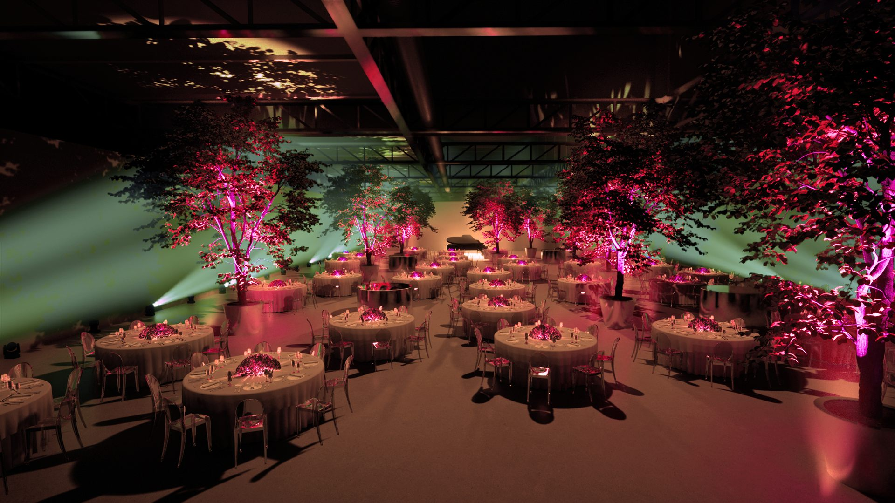
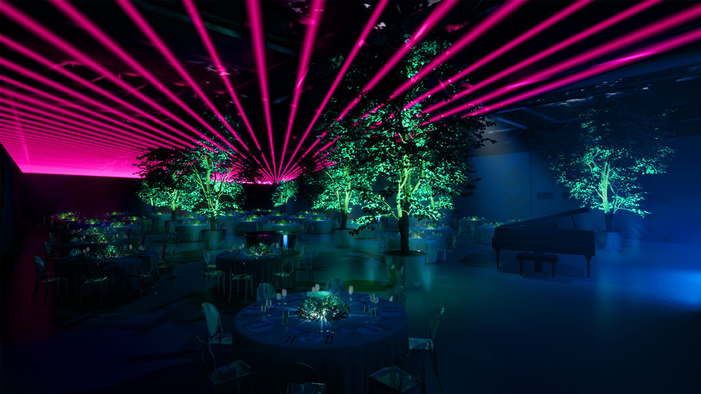
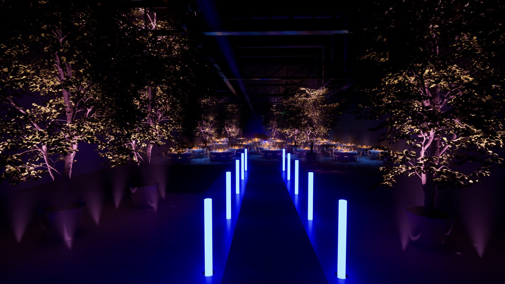
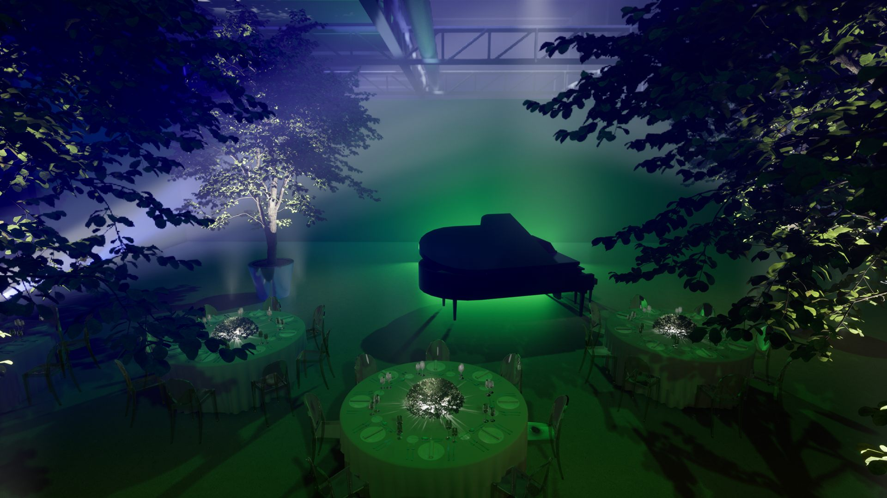
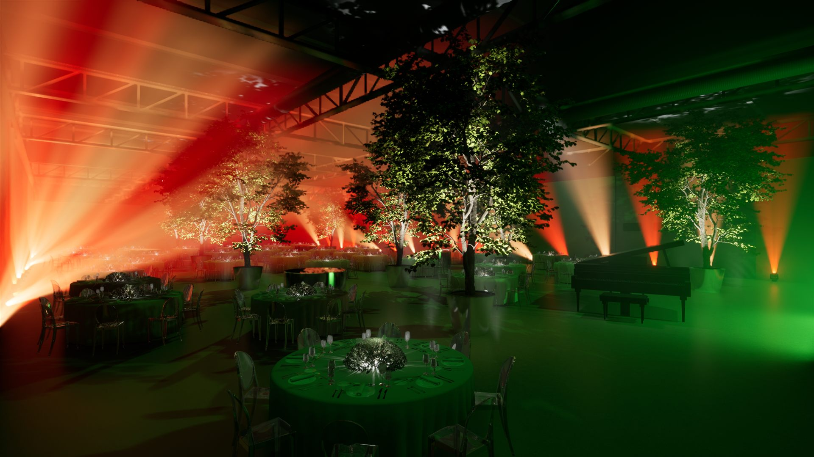
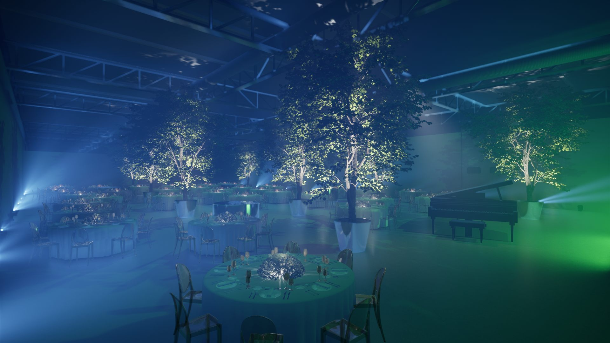
Galleria — Foto dell’Evento

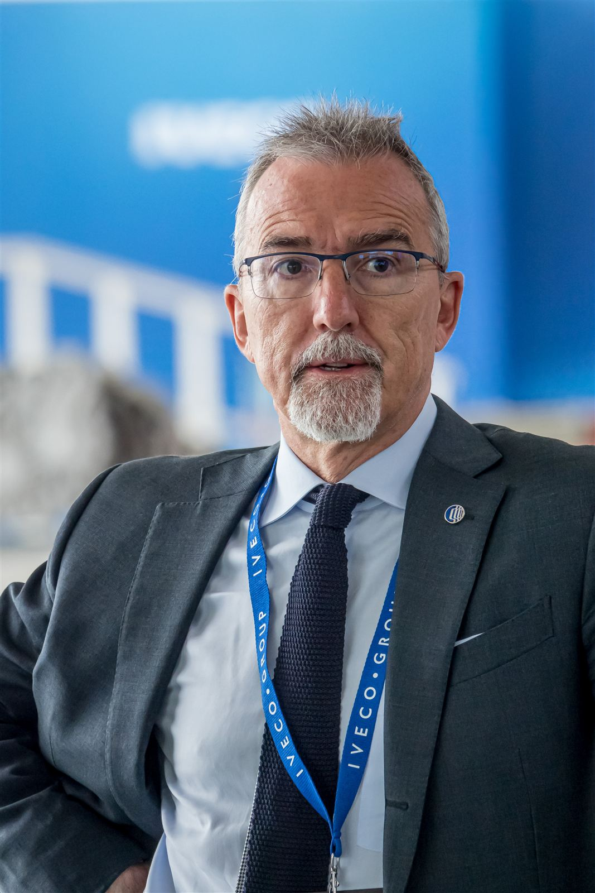
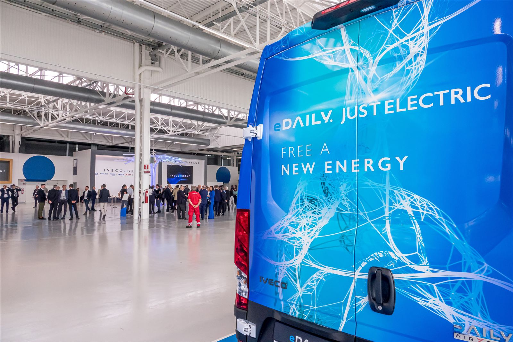
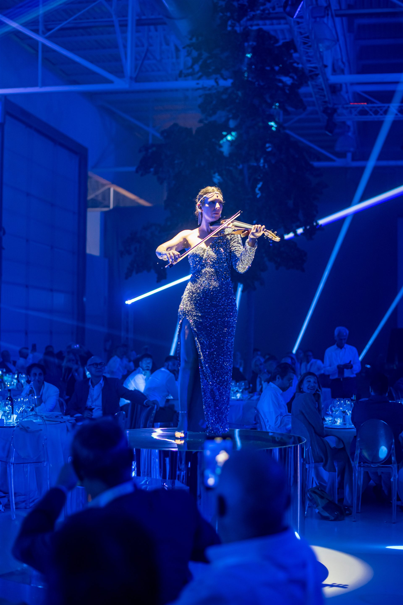
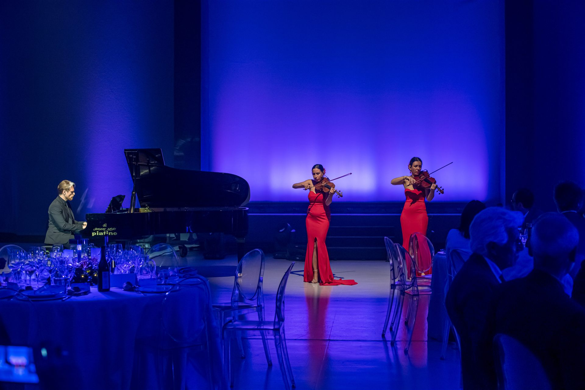
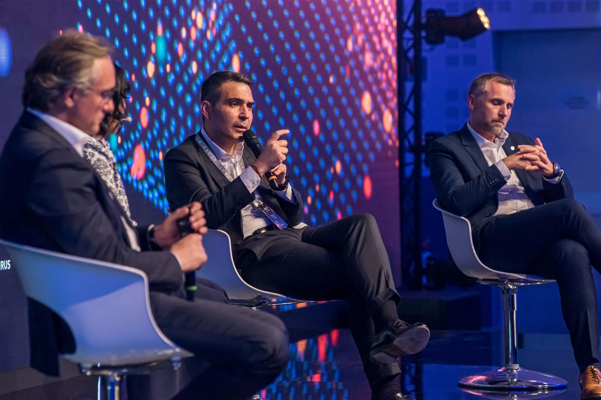
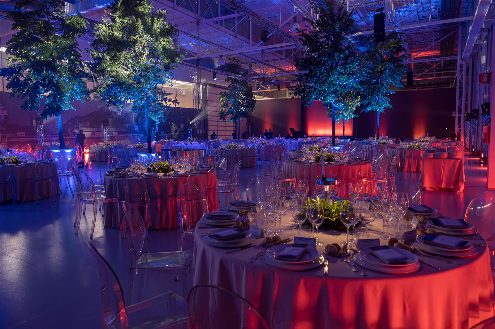
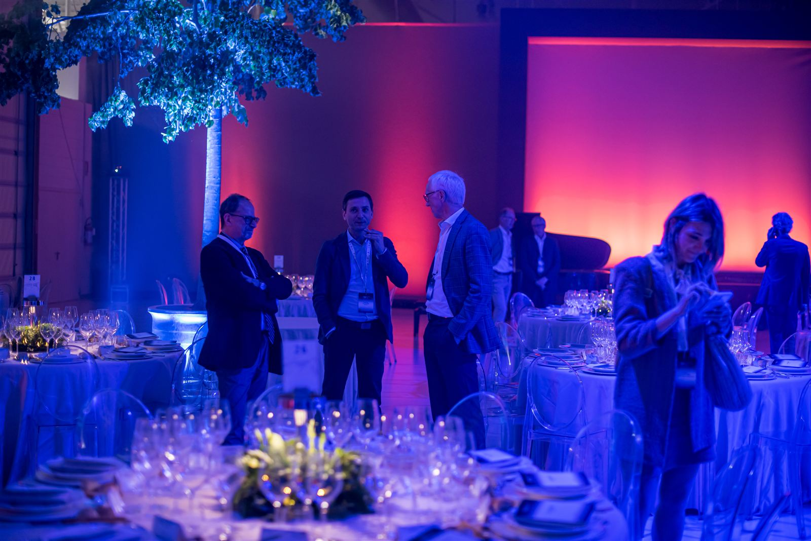
Team Creativo
Collaboratori Chiave
Cristian Taraborrelli
Scenografo e Direttore Creativo
Scenografo, regista e direttore creativo italiano. Firma scenografie e direzioni creative per opera lirica (Bellini, Verdi, Rossini), grandi eventi corporate (Iveco, Amway China, ANIA) e cerimonie istituzionali, ultima delle quali la Cerimonia di Chiusura dei Giochi Paralimpici di Milano Cortina 2026. La sua cifra: tradurre concetti astratti in materia scenica.
Italian set designer, director and creative director. Signs scenography and creative direction for opera (Bellini, Verdi, Rossini), large-scale corporate events (Iveco, Amway China, ANIA) and institutional ceremonies — most recently the Closing Ceremony of the Milano Cortina 2026 Paralympic Games. His signature: translating abstract concepts into scenic matter.
Scénographe, metteur en scène et directeur créatif italien. Signe scénographies et directions créatives pour l’opéra (Bellini, Verdi, Rossini), les grands événements corporate (Iveco, Amway China, ANIA) et les cérémonies institutionnelles — la plus récente étant la Cérémonie de Clôture des Jeux Paralympiques de Milano Cortina 2026. Sa signature : traduire des concepts abstraits en matière scénique.
Filmmaster Events
Casa di Produzione · Milano / Dubai
Fondata nel 1976, Filmmaster Events è tra le agenzie di live communication più premiate al mondo. Cerimonie olimpiche, lanci di prodotto globali, convention istituzionali: più di 11 BEA Italia e BEA World nel suo palmarès. Per Iveco Group cura da anni convention, family day e gala dinner, costruendo un linguaggio scenico riconoscibile per il brand.
Founded in 1976, Filmmaster Events is among the world’s most awarded live communication agencies. Olympic ceremonies, global product launches, institutional conventions: more than 11 BEA Italia and BEA World trophies in its track record. The agency has been Iveco Group’s long-term partner for conventions, family days and gala dinners, building a recognisable scenic language for the brand.
Fondée en 1976, Filmmaster Events compte parmi les agences de live communication les plus primées au monde. Cérémonies olympiques, lancements de produits globaux, conventions institutionnelles : plus de 11 trophées BEA Italia et BEA World à son palmarès. Partenaire de long terme d’Iveco Group pour conventions, family days et gala dinners, l’agence a construit un langage scénique reconnaissable pour la marque.
Iveco Group N.V.
Cliente · Veicoli Industriali e Powertrain
Costituita il 1° gennaio 2022 dallo scorporo del business Iveco da CNH Industrial e quotata sul Euronext Milan, Iveco Group N.V. riunisce otto marchi: Iveco, Iveco Bus, Astra, Heuliez, Magirus, Iveco Defence Vehicles, FPT Industrial e Iveco Capital. Sede a Torino. Una multinazionale che ha scelto la sostenibilità come perno strategico: il gala «Connecting the Dots» nasce da questa visione.
Established on 1 January 2022 with the spin-off of Iveco’s business from CNH Industrial and listed on Euronext Milan, Iveco Group N.V. brings together eight brands: Iveco, Iveco Bus, Astra, Heuliez, Magirus, Iveco Defence Vehicles, FPT Industrial and Iveco Capital. Headquartered in Turin. A multinational that has made sustainability a strategic pillar: the “Connecting the Dots” gala is born from that vision.
Constituée le 1er janvier 2022 par la scission de l’activité Iveco de CNH Industrial et cotée sur Euronext Milan, Iveco Group N.V. réunit huit marques : Iveco, Iveco Bus, Astra, Heuliez, Magirus, Iveco Defence Vehicles, FPT Industrial et Iveco Capital. Siège à Turin. Une multinationale qui a fait de la durabilité un pilier stratégique : le gala « Connecting the Dots » naît de cette vision.
Riconoscimenti e Ricezione di Settore
«Connecting the Dots» si inserisce nel filone di lavori Filmmaster × Iveco Group che ha ottenuto continuità di committenza e copertura sulla stampa di settore (eventreport.it, ADC Group, e20-express). Il caso è stato citato come benchmark di scenografia eco-friendly per eventi corporate, in particolare per la pratica della ripiantumazione integrale degli alberi scenici e per l’uso del laser mapping su superfici naturali in luogo del consueto LED wall.
L’agenzia Filmmaster Events vanta complessivamente oltre 11 trofei BEA Italia e BEA World, e il rapporto pluriennale con Iveco Group — che include convention, family day e dinner show — ha consolidato un linguaggio scenico distintivo per il brand torinese.
“Connecting the Dots” sits within the long-running Filmmaster × Iveco Group portfolio, which has earned client continuity and trade-press coverage (eventreport.it, ADC Group, e20-express). The case has been cited as a benchmark for eco-friendly corporate scenography — in particular for the practice of full replanting of the scenic trees and the use of laser mapping on natural surfaces instead of the customary LED wall.
Filmmaster Events as an agency holds more than 11 BEA Italia and BEA World trophies overall, and its long-term partnership with Iveco Group — including conventions, family days and dinner shows — has consolidated a distinctive scenic language for the Turin-based brand.
« Connecting the Dots » s’inscrit dans le portefeuille de longue date Filmmaster × Iveco Group, qui a obtenu continuité de commande et couverture de la presse spécialisée (eventreport.it, ADC Group, e20-express). Le cas a été cité comme référence de scénographie éco-responsable pour événements corporate — en particulier pour la pratique du replantage intégral des arbres scéniques et pour l’usage du laser mapping sur surfaces naturelles à la place de l’habituel LED wall.
L’agence Filmmaster Events compte au total plus de 11 trophées BEA Italia et BEA World, et son partenariat de long terme avec Iveco Group — conventions, family days, dinner shows — a consolidé un langage scénique distinctif pour la marque turinoise.
Tags